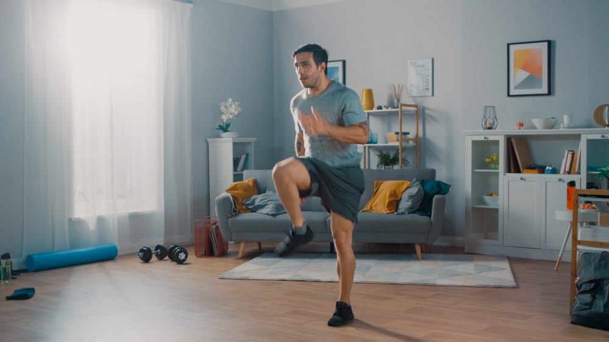
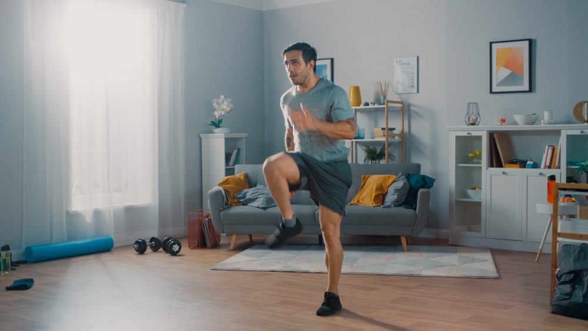

برامج التمارين
النصائح الغذائية
أهداف اللياقة
نصائح عامة
تفاصيل البرامج
النصائح الغذائية 2
 تمارين الكارديو هي تمارين تركز على رفع معدل ضربات القلب.
تُستخدم لتحسين اللياقة القلبية والقدرة على التحمل.
تشمل الجري، ركوب الدراجة، والسباحة.

تمارين المرونة تهدف إلى زيادة مدى حركة المفاصل والعضلات.
تساعد في الوقاية من الإصابات وتحسين الأداء البدني.
تشمل تمارين التمدد واليوغا.
تمارين الكارديو هي تمارين تركز على رفع معدل ضربات القلب.
تُستخدم لتحسين اللياقة القلبية والقدرة على التحمل.
تشمل الجري، ركوب الدراجة، والسباحة.

تمارين المرونة تهدف إلى زيادة مدى حركة المفاصل والعضلات.
تساعد في الوقاية من الإصابات وتحسين الأداء البدني.
تشمل تمارين التمدد واليوغا.